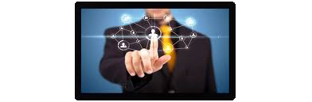
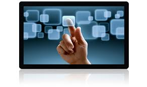
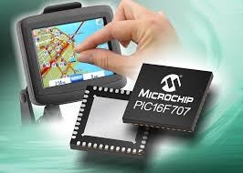

Pros & Cons
Pros:
- Best user experience
- High touch detection accuracy
- Long-Lasting
- High light transmittance
- Durable
- Multi-touch
- Not compatible with gloved touch
- Higher cost
Projected capacitive is the most widespread touch screen. It responds to light touch. No pressure force is needed for detection. Projected capacitive requires an advanced technology to measure electrostatic capacitance and achieve precise locational information from it.
Unlike resistive technology, it does not work simply by connecting a touch screen with a controller sourced from somewhere. A projected capacitive touch screen and controller need to be designed together.
- Projected capacitive is susceptible to electrical noise due to its detection mechanism. Recently, various methods are developed to improve tolerance for noise. It requires fine patterning, thus takes high processing cost.
- The notable application of projected capacitive is Smartphones. Projected capacitive has also been dominant in personal devices such as portable PC, mobile game, and portable audio player.
- Wire sensing method is superior in environment resistance. It can be operated either by bare hand or gloved hand. It supports multiple touches, thus supports various elaborate inputs. Since there are no moving parts in the operation, projected capactive has an incredibly long life.
- Projected capacitive has high durability. Sensitivity of the sensor can be adjusted. If sensitivity is adjusted to high, the touch screen can be operated over a cover glass/cover plastic sheet. These sheets provide additional durability, environmental resistance & a lot of flexibility in design. If sensitivity is increased, projected capacitive can be operated with gloved fingers.